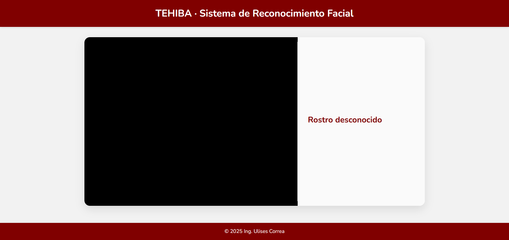

Mis Proyectos Extra

Sistema de Reconocimiento Facial TEHIBA
Proyecto basado en Flask y OpenCV para reconocimiento facial en tiempo real usando cámara web. Detecta rostros conocidos y muestra información relevante en una interfaz web sencilla y responsiva.
El sistema utiliza imágenes almacenadas en la carpeta known/ para identificar personas automáticamente.